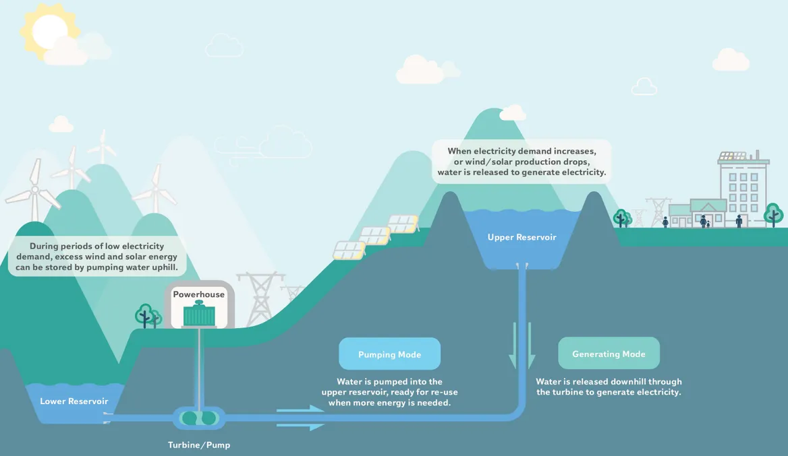

9 Energy Storage
Wesoff
The potential is great and the grid surely needs it, but long-duration energy storage still has a long way to go.
Long-duration storage can accelerate the retirement of peaker plants, defer upgrades of transmission and distribution infrastructure, and improve the dispatchability of renewables such as solar and wind – theoretically, at least.
Systems with more than 100 hours of energy storage capacity provide the most benefit to the grid.
Long-duration storage can reduce the costs of deeply decarbonized electricity systems by 10 percent if the storage technology’s costs are below $20/kilowatt-hour. The savings could reach as high as 40 percent if long-duration storage costs could be reduced to $1/kilowatt-hour.
Economic long-duration energy storage doesn’t exist. Yet.
Today’s high-growth, gigawatt-scale energy storage market is absolutely dominated by lithium-ion batteries with short durations ranging from minutes to a few hours and used largely in ancillary, not energy, applications.
9.1 Pumped Hydro
Pumped storage (which consists of pumping water from a low reservoir to a higher-elevation reservoir, and then releasing that water to spin turbines and generate power) accounts for 95% of all utility-scale energy storage in the U.S.
America’s 43 pumped storage plants were mostly built between 1960 and 1990 to support nuclear power and have a total combined capacity of roughly 100 gigawatts of storage. There are a number of new plants in development that are being built, in this case, to help support renewables rather than nuclear.
The problems with new pumped hydro projects: “They cost billions of dollars and take years to build, and can run afoul of environmental opposition
New Design
On Oregon’s Klamath River, a coalition of Indigenous groups, environmental advocates and other stakeholders will soon remove four hydropower dams erected between 1903 and 1962. The goal is to revitalize the ecosystem — and the surrounding economy.
Upriver and roughly 10 miles northeast of Klamath Falls, as the crow flies, Rye Development hopes to build a new type of hydropower plant altogether.
The Swan Lake Energy Storage Project would have no connection to surrounding rivers. Rye plans to excavate two 60-acre holes and fill them with water it has already secured. The water would cycle up and down the closed system as the plant charges and discharges electricity.

Two ponds may not seem radical, but they mark a decisive break with the past.
9.2 Flow Batteries
Flow batteries circulate a liquid electrolyte through stacks of electrochemical cells and have long held the promise of 10-hour durations, tens of thousands of cycles, minimal degradation and no limitations on depth of discharge. This performance promise has lured venture capital investment and research and development — but so far, the investments have yielded few commercial, competitive flow battery products.
9.3 Mechnical Energy Storage
Compressed-air energy storage remains a contender. The Los Angeles Department of Water and Power selected Range Energy and Mitsubishi Power Systems to develop underground salt caverns to store high pressure air (or someday hydrogen)
Raise a rail car, a huge weight and a water column, respectively, with low-cost or curtailed energy, generating power when the mass is lowered.
Quidnet will use excess renewable energy to store pressurized water underground in dry oil and gas wells.
HydroStor
Construction entails digging large-diameter shafts underground, one of which will be filled with water from aboveground tanks. Compressors on the surface will push air into the cavern, where it presses against the column of water to maintain a steady pressure. When released, that compressed air will spin 100-megawatt turbines that regenerate power. All that construction work is expected to take three to four years.
9.4 Thermal Storage
Thermal storage uses excess or curtailed power to charge a thermal “battery” made of materials such as molten salt or cryogenic liquids.
HeatCrete
Norway-headquartered EnergyNest makes its own branded ThermalBattery product which essentially stores heat in a patented form of concrete, which it has dubbed Heatcrete. A heat transfer fluid (HTF) at high temperatures passes through steel pipes cast into the ‘battery’, in technology that the company claims enables storage of energy at very low CapEx cost, using low-cost materials in a simple design. EnergyNest has previously said the Heatcrete materials can last 30 to 50 years of use without degradation.
9.5 Software (Market Flex)
Lee Kasten, a WECC-based power system operator, suggests that we should rely on software and markets, not hardware: “Where possible, we should use software over hardware. For example, don’t build a battery that costs a billion dollars, only works 2% of the time and only moves around 100 [gigawatt-hours] of electricity. Build an energy-imbalance market or an extended day-ahead market for $50 million or $100 million that moves around hundreds of gigawatts of electricity. Give all consumers price signals, and then watch the flexible consumers adapt to those price signals using software to manage existing loads.”
9.6 Compressed Air
Canary Media
Hydrostor stores surplus electricity by compressing air into underground caverns. It updates a long-standing technology that never took off for electrical storage. Hydrostor thinks the tweaks it has made will allow underground storage to work in more places — just as grids increasingly need help turning wind and solar production into reliable 24/7 electricity.
Goldman Sachs agreed and invested $250 million from its private equity division. That’s unusual for the long-duration energy storage sector, which typically draws riskier venture-capital investment.
To build these projects, Hydrostor excavates an 8-foot-diameter shaft that goes 2,000 feet deep. Workers descend to hollow out a cavity, which the company then floods. When it’s time to “charge,” the aboveground facility compresses air and shoots it below the water barrier. To discharge, it releases the compressed air, which spins a turbine and produces electricity.
These projects are designed for eight hours of discharge at full power capacity. But the technology can provide longer storage durations with a bigger cavern to hold more air.
“All we need is reasonably competent bedrock.”